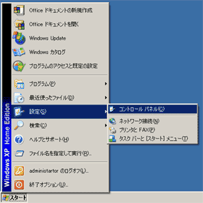
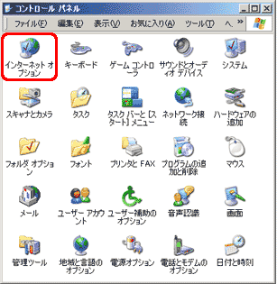
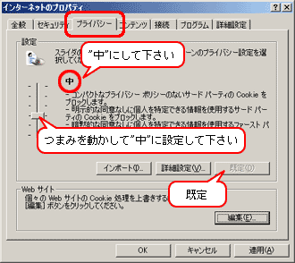

１．.【スタート】⇒【設定】⇒【コントロールパネル】を選択してください。

２．【コントロールパネル】のウィンドウが開いたら【インターネットオプション】アイコンをダブルクリックしてください。

３．【インターネットオプション】のプロパティ（左図参照）が開いたら【プライバシー】タブをクリックしてください。
【プライバシー】タブが開いたら、つまみを動かして【プライバシーレベル】を”中”に設定してください。
または、【規定】ボタン（左図参照）をクリックして下さい。
【プライバシーレベル】が”中”に設定されたら、
【OK】をクリックして画面を閉じてください。
これで設定変更できました。